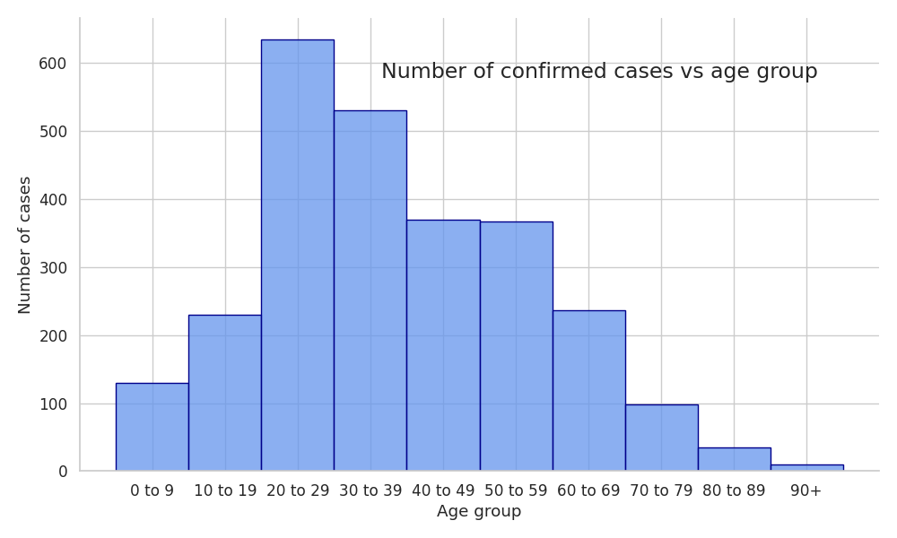

COVID-19 NEW ZEALAND
For Data Analysis and Visualization
Paulina Duda, Patrycja Owczarek
Abstract
In June 2020 New Zealand's governments announce the country covid-free. While, it didn't last long the New Zealand is still one of the country with low covid-19 cases and covid-related deaths.
In this report we will focus on comparing the covid-19 cases in New Zealand to other countries and try to analyze government's response to the pandemic. Additionally we will shows the demographic of covid-19 patients and how the pandemic influences different regions of New Zealand's economy.
Data source
Covid data for different countries: Our World in Data
Covid data for New Zealand and covid-related area: Covid-19 data portal
Alert levels and New Zealand calendar: History of the COVID-19 Alert System
Unemplyments rate: OECD
World population: Worldometers
First look at data
Fig.1 - The total number of cases of COVID-19 in New Zealand
To realise how exactly covid-19 looks like, we will compared it to the other countries:
Poland (POL)
European Union average (EU)
Niger (NER) - similar density
Norway (NOW) - similar density in Europe
Australia (AUS)
Fig.2 - The total number of cases of COVID-19 per million in selected countries
Details
Fig.3 - Number of confirmed cases by month
Table 1. - The total number of cases of COVID-19 by sex
Fig. 4. - The total number of cases of COVID-19 by age
Fig. 4. - The total number of cases of COVID-19 by travel of infected
Vaccination success?
Although, the pandemic turn the easy way in the New Zealand it is still important to start proper vaccination.
Since the 28th February 2021 New Zealand started process of vaccination its citizens.
Fig. 5. - The daily number of covid-19 cases vs daily vaccination

Fig. 6. - The vaccination ratio for selected countries
Alerts
Fig.7 - Alert in New Zealand during 2020/2021 COVID-19 pandemic
Level 1
Level 2
Level 3
Level 4
Border restrictions for entering NZL
Face coverings on public transport
Keep your distance
Self-isolation, quarantine and testing
Face coverings on public transport
Keep your distance
Limiteed gatherings and events
Stay within your household bubble
Travel between regions is heavily restricted.
Gatherings of up to 10 people
Schools can open but will have limited capacity.
Travel is severely limited
All gatherings are cancelled and all public venues are closed
Educational facilities are closed.
Businesses are closed except for essential services
Impact of COVID-19
New Zealand as many countries felt the impact of pandemic on its economy. Mostly, because it is country focused on tourism.
Fig. 6. - The employment rate in New Zealand and selected countries
Placeholder
Conclusion